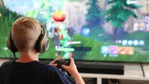

Um dos grandes medos de vários pais é que, ja que seu filho joga muitos jogos violentos contendo armas e sangue, o filho desenvolveria tendências violentas, algo que inicialmente parece obvia a resposta, ao ver algo por muito tempo, por exemplo, um programa de TV feliz, nós eventualmente iremos sentir esse sentimento e ficaremos felizes ao assistir. Então isso deveria acontecer com esse tipo de jogo, certo? Não.

Já que os videogames estão muito em alta hoje em dia, a midia acaba usando eles como uma causa para ganhar audiencia facilmente, e essas reportagens são cheias de pessoas que geralmente acreditam em tudo, e por isso o grande boato dos videogames deixarem as pessoas violentas, se espalhou para muitas pessoas, e dessas pessoas, estão incluidos os pais e mães. Então, realmente são apenas boatos ou não?
Segundo o Aderbal Vieira Junior, do Programa de Orientação e Atendimento a Dependentes da Universidade Federal de São Paulo (Unifesp), diz que a resposta para essa pergunta é complexa. "Uma criança com boa formação e bem colocada na vida não vai se transformar por causa de um jogo violento", explica. "Por outro lado, não descarto que um adolescente disfuncional possa ser influenciado negativamente por um videogame violento. Por si só, o videogame não é ingrediente para tirar a criança da trajetória normal. Pode ser um ingrediente a mais em um caldeirão", diz.
Pensando dessa maneira, essa é a verdade. Uma pessoa com um psicologico normal não é facilmente mudada por algo assim, mas uma pessoa com um psicologico ruim é influenciada facilmente por qualquer coisa, seja um programa de TV, uma serie, um desenho, ou até um videogame, e ao ligar os pontos, essa é a resposta: os videogames são apenas um ingrediente secundario, o principal é o psicologico ruim e/ou danificado.
Só que a midia, ela não vê por esse lado, ela simplesmente fala que os jogos são a causa e, as pessoas desinformadas, acreditam. Entretanto, os jogos não tem apenas esse lado negativo, eles tem, por sinal, muitos pontos positivos. Sendo eles:
Os jogos são e, provavelmente, sempre serão vítimas desse tipo de boato e preconceito, mas não devemos esquecer que eles são como qualquer outro tipo de entretenimento, e até podem ser considerados como um tipo de esporte - o "esports" - onde milhares de pessoas assistem a competição, como qualquer outro esporte atual.
- Bibliografia:
https://www.familia.com.br/os-aspectos-positivos-do-video-game/